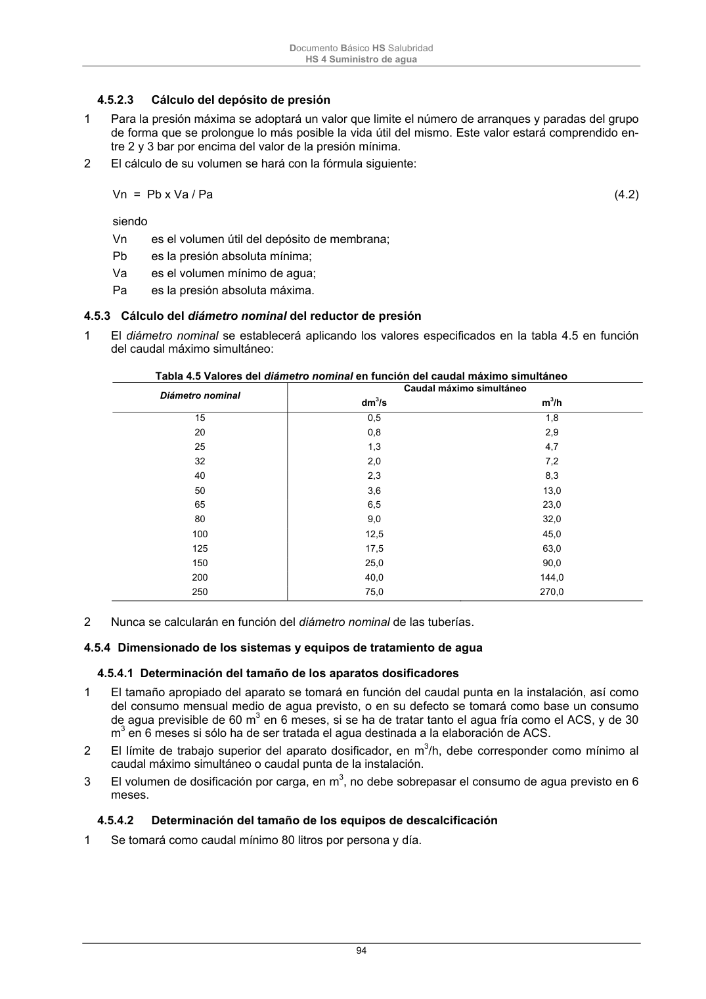

DB-HS Salubridad · edición 2022-06-14 · capa oficial
Documento DB-HS-oficial · SHA-256 del PDF 68df3caacc95f71aee2ec1ba7b2c65ae66155c21e3a8785521b8fdd4fd640d3b
Copia fiel del PDF fuente · Fuente oficial
Ficha de la disposición en la fuente oficial
Formatos: JSON del segmento · Markdown
4.5.3 Cálculo del diámetro nominal del reductor de presión 1 El diámetro nominal se establecerá aplicando los valores especificados en la tabla 4.5 en función del caudal máximo simultáneo: Tabla 4.5 Valores del diámetro nominal en función del caudal máximo simultáneo Diámetro nominal Caudal máximo simultáneo dm 3/s m 3/h 15 0,5 1,8 20 0,8 2,9 25 1,3 4,7 32 2,0 7,2 40 2,3 8,3 50 3,6 13,0 65 6,5 23,0 80 9,0 32,0 100 12,5 45,0 125 17,5 63,0 150 25,0 90,0 200 40,0 144,0 250 75,0 270,0 2 Nunca se calcularán en función del diámetro nominal de las tuberías.
